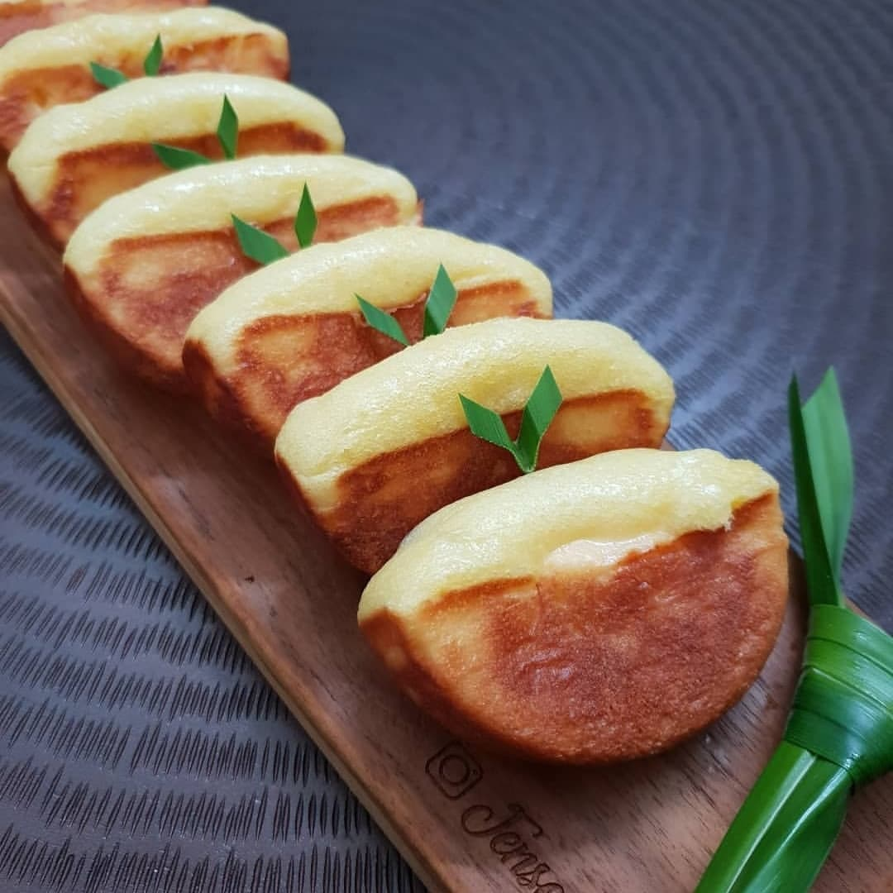

RecTia
Welcome to
RecTia
Resep Membuat
Pukis
Resep bukan hanya untuk dibaca. Tetapi juga untuk dicoba.
Mari kita coba!

Bahan :
Kelapa 1 buah
Tepung terigu 1 kg
Gula pasir 600 gram
Mentega 250 gram
Ragi instan bubuk 1/2 bungkus
Telur 6 butir
Air kelapa 150 ml
Air 1500 ml
Vanili bubuk 1/2 sdt
Sukade (opsional) secukupnya
Cara membuat :
Parut kelapa, lalu peras santannya dengan air. Kemudian rebus hingga mendidih. Setelah mendidih, diamkan hingga dingin.
Rendam ragi instanbubuk ke dalam air kelapa hingga mengembang.
Cairkan mentega hingga cair sempurna.
Masukkan telur, gula, dan vanili bubuk ke dalam ember plastik, kemudian mixer dengan kecepatan tinggi selama 10 menit.
Masukkan tepung terigu, ragi instan yang sudah mengembang, santan, dan mentega cair. Kemudian mixer dengan kecepatan rendah hingga tercampur rata.
Diamkan adonan tersebut selama 30 menit.
Siapkan lembaran seng dan letakkan di atas kompor, kemudian panaskan cetakan pukis besar di atas lembaran seng tersebut.
Oleskan mentega pada cetakan setiap akan mencetak adonan.
Tuang adonan ke dalam cetakan dan taburkan sukade di setiap adonan pada cetakan, kemudian tunggu hingga matang tanpa dibalik.
Angkat pukis. Ulangi hingga adonan habis.
Menurut perkiraan, 1 resep ini dapat menjadi 40 pukis.